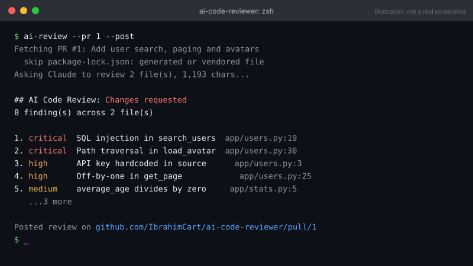
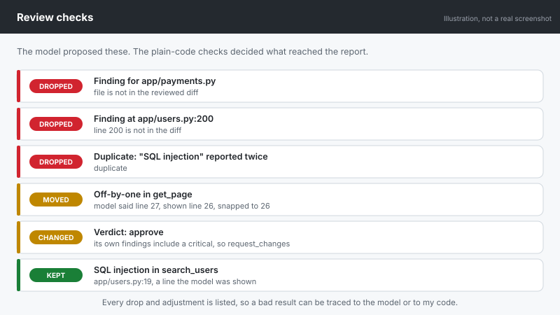
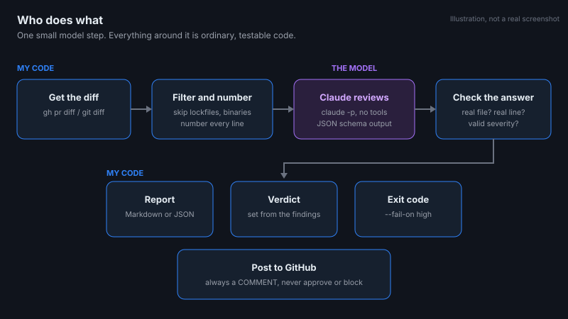

Developer tool · AI
AI GitHub Code Reviewer
- Problem
- An AI model can review code, but it can also return a confident comment about a file or line that does not exist.
- What I built
- A command-line tool that reviews a pull request or git diff using Claude Code running headless. The model reads the change and reports bugs, security problems and missing tests, and the tool can post them as inline comments on the PR. My own code fetches and filters the diff, then checks every finding against it and drops any that cite a file or line that was never shown.
- Outcome
- On a practice pull request it posted review comments on GitHub, including a critical SQL injection finding and a finding about a connection that is never closed.
- What I learned
- Keeping the model's job small, one call with no tools, made it easy to tell whether a bad review was the model's fault or my code's. Structured output was not enough on its own: the model can return valid JSON that points at a line that does not exist, so the checks mattered as much as the prompt.



